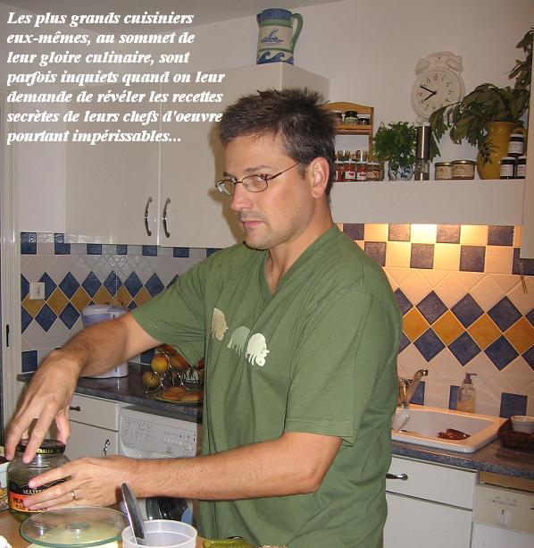

Recette n°99 :
Hamburgers à la plancha du commissaire
Fred

Ingrédients : (pour 4 personnes)
- 4 petits pains à hamburger aux graines de sésame (type
Harrys par exemple) précoupés en deux
- une salade verte
à grandes feuilles et sans trop de goût (laitue par
exemple)
- 8 gros cornichons
sucrés, type Pickle
- 8 tranches de fromage
à hamburger
- 4 rondelles de tomate
- 2 oignons jaunes
- 400 g de steack
haché pas gras en vrac
- sauce ketchup et/ou
moutarde
Préparation :
- faire chauffer la
plancha
- débiter les
cornichons en rondelles
- débiter la
moitié des oignons en tranches, hacher l’autre moitié des
oignons assez fin
- préparer les 4
steacks en y insérant les oignons hachés
- mettre à cuire
sur la plancha : les steacks, les pains sur leur « face mie
», les oignons en rondelles
- mettre le tout au
milieu de la table afin que les convives composent eux-mêmes leur
hamburger
Observations :
- recette préparée le 1er novembre 2006 à
Porticcio ; excellente !